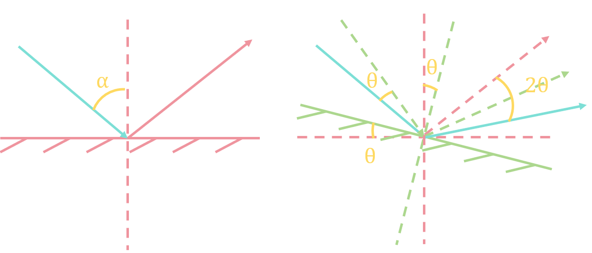

平面镜（平面反射镜）：
唯一能成完善像的最简单光学元件。
成像特点：
正立的像与物等距分布在镜面的两侧，大小相等，虚实相反，坐标系改变。又将这种像称为镜像。
奇数次反射成镜像，偶数次反射成一致像。
单平面镜旋转特性：
当反射镜转动\(\theta\)角后，入射角增加\(\theta\)角，导致反射角也增大\(\theta\)角，最终出射光线将同向偏移\(2\theta\)角度。
（平面镜向上转\(\theta\)角度，入射光线相对向下转\(\theta\)角度，法线相对向上转\(\theta\)角度。）

光学杠杆：
微小角度测量：
$$\theta \approx \tan\theta = x/a$$
微小位移测量：
$$y = f'\tan2\theta \approx 2f'\theta$$
$$y = (2f'/a)x = Kx$$
其中\(K\)为光学杠杆的放大倍数
成像特点：
设两个平面镜夹角为\(\alpha\)，出射光线与入射光线延长线夹角为\(\beta\)，有：
$$\beta = 2\alpha$$
即出射光线与入射光线的夹角与入射角无关，仅取决于双面镜夹角\(\alpha\)。
旋转特性：
当入射光线的方向一定时，若双面镜夹角不变，其绕棱边旋转时出射光线方向始终不变。
平行平板：
由两个相互平行的折射平面构成的光学元件。
如分划板、测微平板、保护玻璃、载玻片、盖玻片、滤光片等。
平行平板成像特点：
1、光线经平行平板折射后传播方向不变。
$$ \begin{cases}
n_1\sin I_1 = n_1' \sin I_1'\\
n_2\sin I_2 = n_2' \sin I_2'
\end{cases}
$$
$$ \because n_1=n_2' = 1, n_1' = n_2 = n, I_1' = I_2$$
$$ \therefore I_2' = I_1, U_2' = U_1 $$
2、平行平板是个无光焦度的光学元件，不会使物体放大或缩小，在光学系统中对总光焦度无贡献。
$$ \gamma = \frac{\tan U_2'}{\tan U_1} = 1 $$
$$ \beta = \frac{n'}{n}\gamma = 1 $$
$$ \alpha = \frac{\beta}{\gamma} = 1 $$
出射光线与入射光线不重合，产生侧向位移\(\Delta T = DG\)和轴向位移\(\Delta L' = AA'\) $$ \begin{align} \Delta T &= DG\\ &= DE\sin(I_1 - I_2)\\ &= \frac{d}{\cos I_1'}sin(I_1-I_1')\\ &= d\sin I_1(1-\frac{\tan I_1'}{\tan I_1})\\ \Delta L' &= \frac{\Delta T}{\sin I_1}\\ &= d(1-\frac{\tan I_1'}{\tan I_1}) \end{align} $$
平行平板近轴区内细光束成像是完善的
此时\(I_1、I_1'\)余弦值都很小，其余弦值都可近似为1。
轴向位移：
$$ \begin{align}
\Delta l' &= d(1-\frac{\tan I_1'}{\tan I_1})\\
&= d(1-\frac{\cos I_1}{n\cos I_1'})\\
&= d(1-\frac{1}{n})
\end{align}$$
反射棱镜：将一个或多个反射面磨制在同一块玻璃上形成的光学元件
作用：
结构：
类型：
道威棱镜：
由直角棱镜去掉多余的直角部分而成。
特点：
立方角锥棱镜：
由立方体切下一角形成
结构特点：
物体经过带有棱镜或棱镜系统的像坐标结果可通过坐标判断原则加以分析判断。
设物坐标为右手坐标：
反射棱镜展开：用一块平行平板取代棱镜的过程，当光线垂直入射到棱镜时，将以直线而不是折线经过平行平板玻璃。
反射棱镜展开的方法：在棱镜的主截面内按照反射面的顺序，以反射面与主截面的交线为轴，依次使主截面翻转180°，从而得到棱镜的等效平行平板。
理论上所有反射棱镜均可展开成入射面与出射面严格平行的等效玻璃平板，但实际上由于棱镜本身存在着一定的加工误差，实际棱镜展开后入射面与出射面间并不严格平行。反射棱镜的光学不平行度：光线在出射前与出射面的法线方向之间存在的夹角。
反射棱镜的光轴长度计算：等效平行平板的厚度即为棱镜的展开长度L，设棱镜的通光口径为D，L=KD。其中，K为棱镜的结构参数，其只与棱镜的类型有关，而与棱镜的尺寸无关。